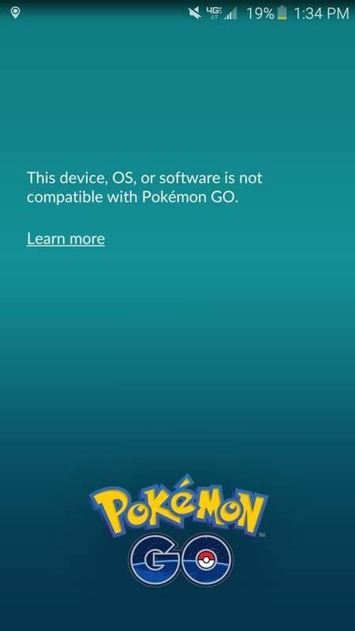

A atualização mais recente de Pokémon GO trouxe uma novidade interessante para os jogadores. Depois do update, é possível andar com sua criatura favorita ao seu lado dentro do game.
A atualização de Pokémon GO também trouxe a correção para alguns bugs e melhorias na performance do jogo. Entretanto, uma das mudanças tem incomodado os jogadores: a impossibilidade de rodar o game em aparelho Android com root ou dispositivos iOS com jailbreak.
Essa medida é mais uma manobra da Niantic para continuar eliminando os trapaceiros que utilizam métodos alternativas para crescer dentro do game. Em dispositivos com root/jailbreak, é mais fácil contornar as proteções do sistema e implementar alguns artifícios extras na jogatina de Pokémon GO
A imagem abaixo mostra a mensagem que o jogador recebe quando está utilizando um dispositivo nas condições impeditivas de acordo com a Niantic: "Este dispositivos, sistema operacional ou software não é compatível com Pokémon GO".
No tópico do reddit em que se discute esse assunto, alguns jogadores estão comentando que não vão atualizar o dispositivo por medo de encontrar essa mensagem. Alguns usuários também compartilharam que em breve vão contornar esse problema e poderão jogador normalmente Pokémon GO em aparelhos com root ou jailbreak.
Por enquanto, a Niantic e a Pokémon Company não se pronunciaram especificamente sobre esse assunto. É muito provável que, à medida que mais usuários se deparem com essa mensagem, as empresas se sintam mais à vontade para comentar as manobrar para evitar jogadores trapaceiros, mesmo que isso tenha que impedir que jogadores honestos de aproveitar o game.
Desenvolvido por Adriano Rocha e Cinthia Bezerra